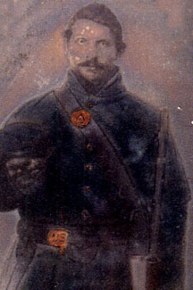

|

NAME: Charles Roahr
BORN: 1836
DIED: 1863
ALLEGIANCE: Union
HIGHEST RANK: Private
UNIT: 105th Ohio Volunteer Infantry, Company H
RECORD: Enlisted August 11, 1862. Participated in
Battle of Perryville, Kentucky, October 1862;
Tullahoma Campaign, Tennessee, June-July 1863. Died of dysentery in
Nashville, Tennessee, September 4, 1863.
|
|
Like many Civil War regiments, the 105th Ohio Volunteer
Infantry--despite participating in several large
battles--lost more men to disease than to battlefield
wounds. Among those who succumbed to illness was Charles
Roahr, a master cooper (barrel-maker) from Petersburg, Ohio.
In August 1862, Roahr left his shop, his wife, and his three
young sons to join the 105th Ohio, then forming at Camp
Taylor in Cleveland under Colonel Albert S. Hall. Mustered
into Company H on August 21, Private Roahr traveled with his
regiment by rail to Kentucky to halt Confederate Major
General Edmund Kirby Smith's advance, part of General
Braxton Bragg's invasion of the state.
After a few months of army life, Roahr sat for this
portrait, which he sent to his wife with the following
words:
Dear wife I must drup you a few lines to let you no that I
am well and harty yet ... I send you ... my littness
[likeness] ... and I want you to ceat [keep] it and take
good care of it that if I should not git hone your can see
me; it lokd precisely like me ... it is a litel darker than
I am I bad it taking as I got relevd from garde with over
coat and all on as you se I tok the cap of to please you ...
from
Charles Roahr
your Dear husbent to my Dear wife Christana Roahr
Roahr never saw his wife and sons again. In late July 1863
he fell ill at Sewance, Tennessee. He apparently recovered,
but suffered a relapse and was sent to General Hospital No.
19 in Nashville, where he died on September 4, 1863, of
dysentery. It was his seventh wedding anniversary.
Source: Civil War Times Illustrated
41:6 (December 2002), 28.
|